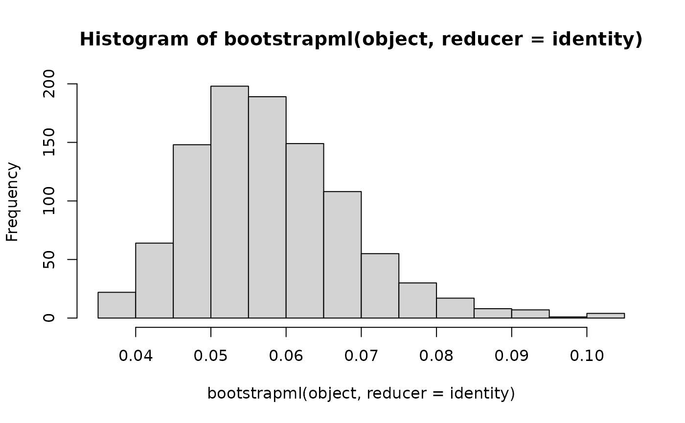

Parametric Bootstrap on Distributions Fitted with Maximum Likelihood
Source:R/bootstrap.R
bootstrapml.RdThe parametric bootstrap is a resampling technique using random variates
from a known parametric distribution. In this function the distribution
of the random variates is completely determined by the unvariateML
object object.
Usage
bootstrapml(
object,
reps = 1000,
map = identity,
reducer = stats::quantile,
...
)Arguments
- object
A
univariateMLobject.- reps
Positive integer. The number of bootstrap samples.
- map
A function of the parameters of the
univariateMLobject. Defaults to the identity.- reducer
A reducer function. Defaults to
stats::quantilewith default argumentprobs = c(0.025, 0.975).- ...
Passed to
reducer.
Details
For each bootstrap iteration a maximum likelihood estimate is calculated
using the ml*** function specified by object. The resulting
numeric vector is then passed to map. The values returned by
map is collected in an array and the reducer is called on
each row of the array.
By default the map function is the identity and the default
reducer is the quantile function taking the argument probs,
which defaults to c(0.025, 0.975). This corresponds to a 95\
basic percentile confidence interval and is also reported by
confint()
Note: The default confidence intervals are percentile intervals, not empirical intervals. These confidence intervals will in some cases have poor coverage as they are not studentized, see e.g. Carpenter, J., & Bithell, J. (2000).
References
Efron, B., & Tibshirani, R. J. (1994). An introduction to the bootstrap. CRC press.
Carpenter, J., & Bithell, J. (2000). Bootstrap confidence intervals: when, which, what? A practical guide for medical statisticians. Statistics in medicine, 19(9), 1141-1164.
See also
confint() for an application of bootstrapml.
Examples
# \donttest{
set.seed(1)
object <- mlgamma(mtcars$qsec)
## Calculate c(0.025, 0.975) confidence interval for the gamma parameters.
bootstrapml(object)
#> 2.5% 97.5%
#> shape 70.285697 180.72290
#> rate 3.965363 10.12785
# 2.5% 97.5%
# shape 68.624945 160.841557
# rate 3.896915 9.089194
## The mean of a gamma distribution is shape/rate. Now we calculate a
## parametric bootstrap confidence interval for the mean with confidence
## limits c(0.05, 0.95)
bootstrapml(object, map = \(x) x[1] / x[2], probs = c(0.05, 0.95))
#> 5% 95%
#> 17.33962 18.31253
# 5% 95%
# 17.33962 18.31253
## Print a histogram of the bootstrapped estimates from an exponential.
object <- mlexp(mtcars$qsec)
hist(bootstrapml(object, reducer = identity))

# }